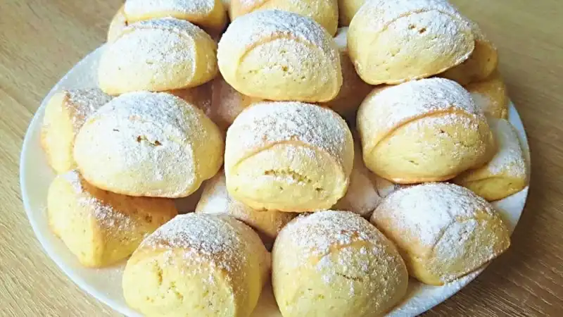
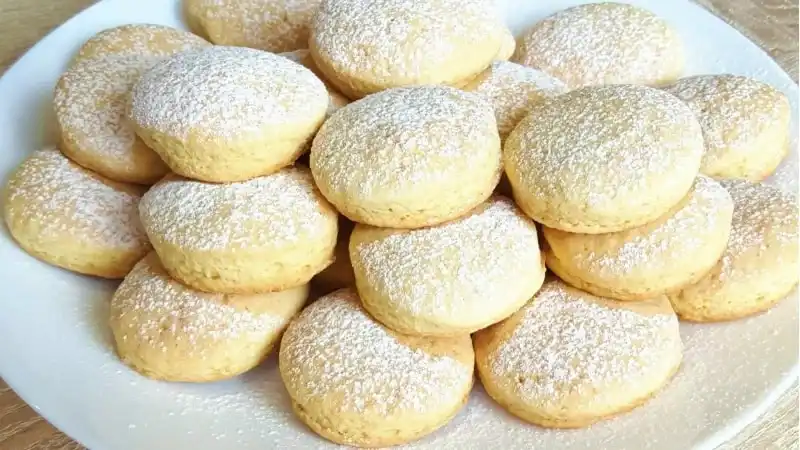

Быстрый Завтрак за 10 Минут. Горячие Бутерброды на Завтрак.
Завтраки | Вторые блюда
251 просмотров
240
Творожное Печенье к Чаю. Вкусное Печенье из Творога
Завтраки | Десерты и выпечка
438 просмотров
241
Сырники в духовке без муки

Завтраки | Диетические и постные блюда
13 просмотров
35
Булочки со Сгущёнкой и Штрейзельной Крошкой
Завтраки | Десерты и выпечка
152 просмотров
68
Быстрый Перекус Слойки с Колбасой и Сыром. Вкусно и Быстро.

Завтраки | Первые блюда | Вторые блюда
181 просмотров
68
Вкусный и Быстрый Завтрак с Сыром

Завтраки | Вторые блюда
104 просмотров
57
Быстрый и Вкусный Банановый Завтрак за 5 Минут
Завтраки | Десерты и выпечка
62 просмотров
46
Французские Тосты с Яблочной Начинкой
Завтраки | Десерты и выпечка
62 просмотров
46
Молочное Печенье к Чаю Простой Рецепт
Завтраки | Десерты и выпечка
195 просмотров
57
Сладкие Вафли Идеальный Рецепт
Завтраки | Десерты и выпечка
342 просмотров
46
Гармония вкуса это вкусно быстро просто вкусный рецепт который быстро готовится завтраки завтрак к столу
Печенье на сметане
Завтраки | Десерты и выпечка
105 просмотров
35
Яблочные Панкейки
Завтраки | Десерты и выпечка
45 просмотров
24
Лепёшки с Зеленью на Сковороде без Дрожжей

Завтраки | Первые блюда | Диетические и постные блюда
82 просмотров
13